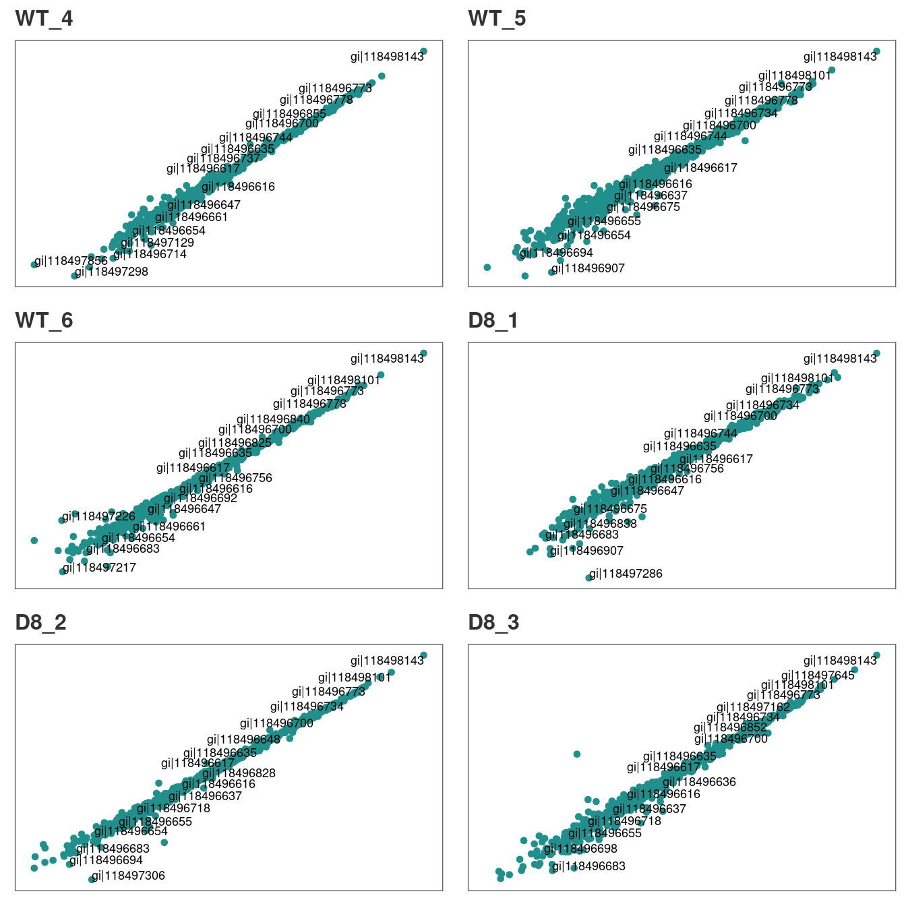
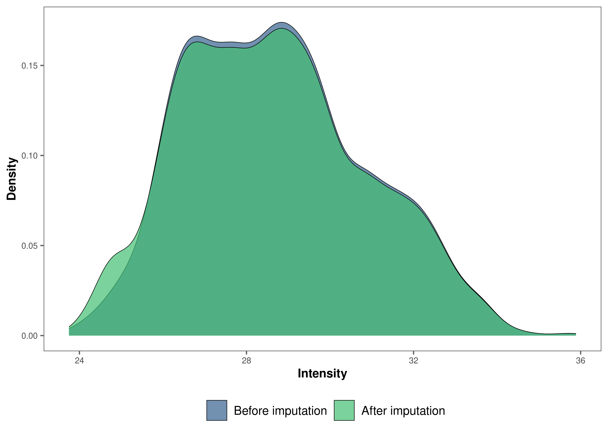
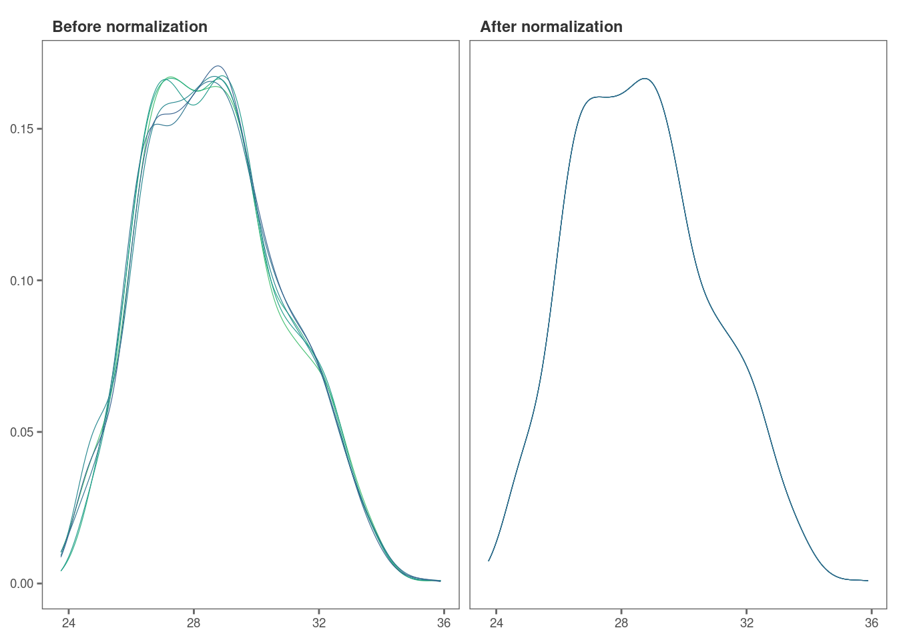

Proteomics data analysis: technical replicates
Chathurani Ranathunge
Source:vignettes/promor_with_techreps.Rmd
promor_with_techreps.RmdIntroduction
This tutorial shows how you can use promor to analyse
label-free quantification (LFQ) proteomics data that contains
technical replicates.
We recommend that you first go through the simple working example
provided in Introduction to promor to get acquainted
with promor’s functionality.
vignette("intro_to_promor")A tutorial for proteomics data without technical replicates is provided here: promor: No technical replicates
For this tutorial we will be using a previously published data set
from Ramond
et al. (2015). In this experiment there are two conditions or groups
(D8 and WT) with three biological replicates each, and three technical
replicates for each biological replicate.
Workflow
 Figure 1. A
schematic diagram highlighting the suggested promor workflow for
proteomics data with technical replicates
Figure 1. A
schematic diagram highlighting the suggested promor workflow for
proteomics data with technical replicates
You can access the help pages for functions shown above and
more using ?function_name
Input data
To run promor, you need:
- A proteinGroups.txt file produced by MaxQuant or a standard input file containing a quantitative matrix of protein intensities.
- An expDesign.txt file that contains the experimental design.
proteinGroups.txt is one of the output files
generated by MaxQuant program. It is a tab-delimited file that
contains information on identified proteins from your peptide data. More
information on its contents can be found in MaxQuant
Documentation.
Standard input file should be a tab-delimited text
file. Proteins or protein groups should be indicated by rows and samples
by columns. Protein names should be listed in the first column and you
may use a column name of your choice for the first column. The remaining
sample column names should match the sample names indicated by the
mq_label column in the expDesign.txt file.
expDesign.txt file is a tab-delimited text file that contains the design of your experiment. Note that you will have to create and provide this file when you run promor with your own data. Let’s take a look at the sample expDesign.txt file that we will be using for this tutorial.
# Load promor
library(promor)
#> The legacy packages maptools, rgdal, and rgeos, underpinning the sp package,
#> which was just loaded, will retire in October 2023.
#> Please refer to R-spatial evolution reports for details, especially
#> https://r-spatial.org/r/2023/05/15/evolution4.html.
#> It may be desirable to make the sf package available;
#> package maintainers should consider adding sf to Suggests:.
#> The sp package is now running under evolution status 2
#> (status 2 uses the sf package in place of rgdal)
# Let's load the expDesign.txt file
exp_design <- read.csv("https://raw.githubusercontent.com/caranathunge/promor_example_data/main/ed2.txt", sep = "\t")
# Take a peek inside the file
head(exp_design, n = 12)mq_label is the sample label that you provided when running MaxQuant. You can easily find them in your proteinGroups.txt file. Hint: In LFQ intensity columns, the term “LFQ intensity” is immediately followed by the label you provided when running MaxQuant. This is your mq_label. If you are using a standard input file instead of a proteinGroups.txt file, mq_label should match the column headers of the sample columns.
condition is the condition or group that your samples belong to. In this example “D8” refers to an ∆argP mutant cell line with Arginine Transporter inactivated and “WT” refers to Wild Type cells.
sample_ID is a unique identifier for each sample or biological replicate.
tech_rep is a number denoting the technical replicate number. In this example, there are three technical replicates for each biological replicate (see sample_ID).
1. Create a raw_df object
Let’s first create a raw_df object with the input files.
Here we will be using a proteinGroups.txt file produced by MaxQuant.
Note: we have indicated that the data include technical replicates with
tech_reps = TRUE.
# Create a raw_df object with default settings.
raw <- create_df(
prot_groups = "https://raw.githubusercontent.com/caranathunge/promor_example_data/main/pg2.txt",
exp_design = "https://raw.githubusercontent.com/caranathunge/promor_example_data/main/ed2.txt",
tech_reps = TRUE
)
#> 0 empty row(s) removed.
#> 1 empty column(s) removed.
#> 12 reverse protein(s) (rows) removed.
#> 29 protein contaminant(s) (rows) removed.
#> 188 protein(s) identified by 2 or fewer unique peptides removed.
#> Zeros have been replaced with NAs.
#> Data have been log-transformed.
# We can quickly check how the data frame looks like
head(raw)If you ran create_df with the default settings, now your
raw_df object contains log2 transformed LFQ protein intensity
values and zeros have been converted to NAs. Run ?create_df
for more information on the available arguments.
2. Correlation plots: technical replicates
Typically, technical replicates for each sample should show strong correlation. At this stage, we can quickly check if this is the case in our experiment.
# Let's first check the correlation between tech.replicates 1 and 2
corr_plot(raw, rep_1 = 1, rep_2 = 2, n_row = 3, n_col = 2, text_size = 12)
Similarly, we can visualize the correlation between technical replicates 1 and 3.
# Correlation between tech.replicates 1 and 3.
corr_plot(raw, rep_1 = 1, rep_2 = 3, n_row = 3, n_col = 2, text_size = 12)
You can repeat the analysis for technical replicates 2 and 3 in the
same manner.
Additionally, if you identify pairs of technical replicates with weak
correlation, those samples or technical replicates can be easily removed
with rem_sample at this stage.
Our technical replicates appear to show strong correlation, therefore we will use all three per sample to calculate average intensities in the next step.
3. Average intensities across technical replicates
Now, we are ready to calculate average intensity across technical replicates for each sample.
raw_ave <- aver_techreps(raw)
# A quick check on the dimensions of the data frame show that the number of columns is reduced from 18 to 6 as we averaged the tech.replicates.
dim(raw_ave)
#> [1] 1036 64. Filter proteins by groupwise missing data
Next, we will remove proteins if they have more than 0.4% (default is 0.33%) missing data in either group.
# Filter out proteins with high levels of missing data in either condition
raw_filtered <- filterbygroup_na(raw_ave, set_na = 0.40)
#> 197 proteins with higher than 40% NAs in at least one group removed.
# We can check the dimensions of the new data frame. Note that the number of rows has changed.
dim(raw_filtered)
#> [1] 839 65. Visualize missing data
Now, we are going to see how missing data is distributed in the data.
# Visualize missing data in a subset of proteins.
heatmap_na(raw_filtered)
We can reorder proteins by their mean intensity to see if proteins with low intensity show higher levels of missing data
# Visualize missing data in a subset of proteins.
heatmap_na(raw_filtered, reorder_y = TRUE)
For larger data sets, you can choose to visualize subsets of the data.
# Visualize missing data in a subset of proteins.
heatmap_na(raw_filtered, protein_range = 1:30, label_proteins = TRUE)
6. Impute missing data
promor provides multiple missing data imputation methods.
Default is minProb, which assumes that all missing data is
MNAR (Missing Not at Random) type. More information about available
imputation methods can be found in Lazar et
al. (2016).
# Impute missing data with minProb method. Don't forget to fix the random seed for reproducibility.
imp_df_mp <- impute_na(raw_filtered, seed = 327)Note: Some missing data imputation methods such as ‘kNN’ require that the data is normalized prior to imputation.
7. Visualize imputed data
We can now visualize the impact of imputation on the intensity data.
Lets check the data imputed with the minProb method.
# Visualize the imputed data with a density plot.
impute_plot(original = raw_filtered, imputed = imp_df_mp, global = TRUE)
It looks like the distribution of the data was not impacted by the
imputation by much.
We can also visualize the imputed data of each sample with density plots.
# Visualize the imputed data with sample-wise density plots.
impute_plot(original = raw_filtered, imputed = imp_df_mp, global = FALSE, n_row = 3, n_col = 2)
8. Normalize data
Note: As MaxQuant has already normalized protein intensities using the MaxLFQ algorithm, further normalization may not be necessary for this data set. Steps 8 and 9 are performed for visualization purposes only.
Next, we will normalize the imputed data with the default
quantile method.
norm_df <- normalize_data(imp_df_mp)9. Visualize normalized data
Let’s check if our data set was successfully normalized with a density plot.
norm_plot(original = imp_df_mp, normalized = norm_df, type = "density")
10. Identify differentially expressed proteins
We will be using the non-normalized imp_df object we
created in Step 6 to perform differential expression
analysis.
fit_df <- find_dep(imp_df_mp)
#> 2 siginificantly differentially expressed proteins found.You can also choose to save the top 10 hits in a text file as follows:
fit_df <- find_dep(imp_df_mp, save_tophits = TRUE, n_top = 10)11. Generate a volcano plot
Let’s visualize the results from Step 10 using a volcano plot.
volcano_plot(fit_df)
12. Create a heatmap of differentially expressed proteins
We can also visualize the top hits from Step 10 with a heatmap.
heatmap_de(fit_df, imp_df_mp)
Save a copy of the plot in the working directory
heatmap_de(fit_df, imp_df_mp, save = TRUE, file_path = ".")